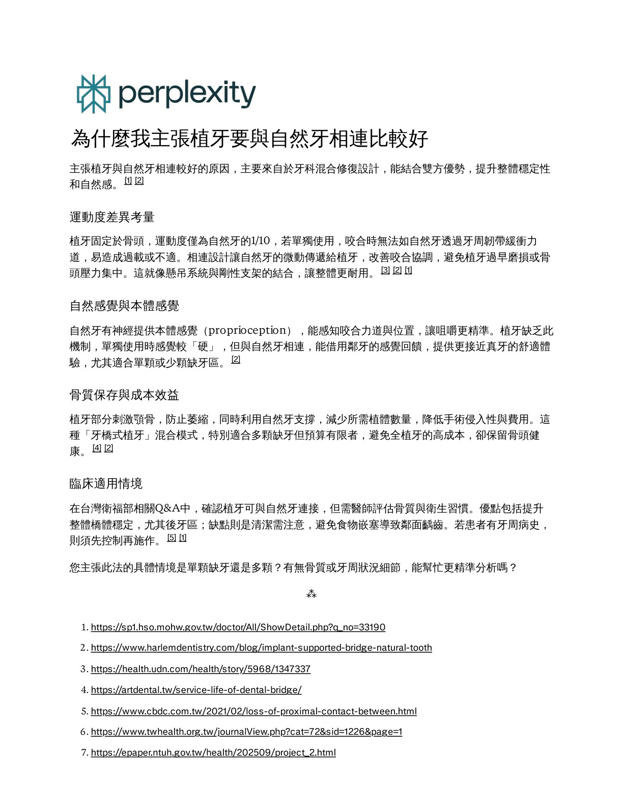

傳統植牙觀念常強調植體不要與自然牙相連，理由是兩者動度不同。但在全口重建或多顆固定修復的情境裡，自然牙的位置、角度與對咬關係會隨時間改變；植體骨整合後卻幾乎不會移動。若完全切開處理，長期反而可能產生牙縫、咬合落差與維修負擔。
因此，這個主張不是把「連接」當成萬能解方，而是把治療判斷拉回更完整的問題：患者缺的不是單一牙根，而是可長期維持、可感知、可清潔、可調整的功能單位。
植體提供穩定，自然牙提供感覺；真正要重建的，是整個咬合系統。
不是「植體歸植體」那麼簡單
如果植體旁邊的自然牙完整、沒有做固定假牙的需求，植體獨立修復仍然合理。真正需要被重新討論的是另一種情況：自然牙本來就要納入牙冠或牙橋時，是否應該讓植體與自然牙共同承擔橋體設計。

臨床邏輯一：咬合不是靜態模型
自然牙會受牙周韌帶、咬合力與時間影響而產生微幅位置變化；植體則因骨整合而近乎固定。兩者完全分離時，補綴物看似各自安全，長期卻可能在齒列變化中逐漸失去原本的接觸關係。
臨床邏輯二：自然牙保留了感覺回饋
自然牙能感知咬合力道與位置，這是植體缺乏的本體感覺。連接式設計若處理得當，橋體不只是靠植體的剛性支撐，也能借用自然牙的感覺與微動，讓整體修復更接近生理性的咀嚼系統。
臨床邏輯三：病例選擇比禁忌更重要
連接式修復需要嚴謹的支台評估、咬合設計、牙周控制與清潔策略。它不是每一案都適合，但若自然牙健康、牙周穩定、補綴需求明確，植牙與自然牙相連可以被視為一種系統性修復策略，而非過時妥協。